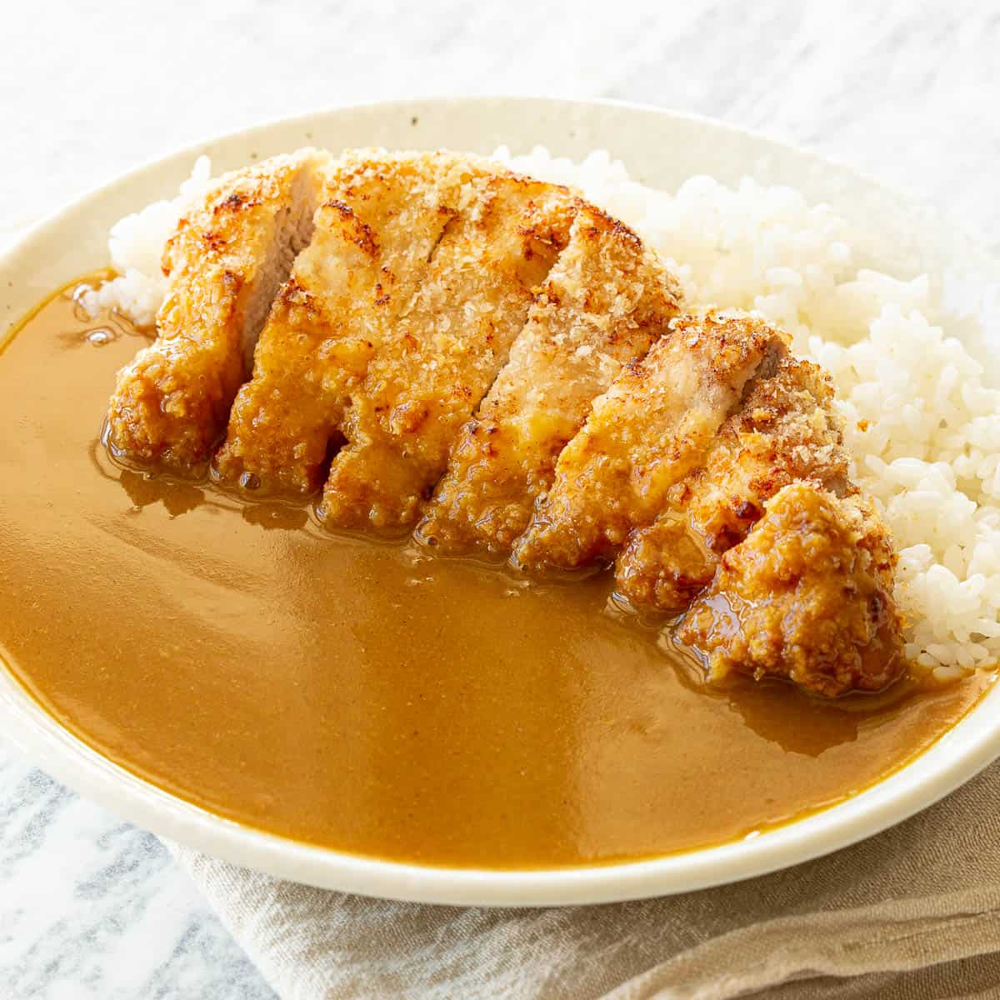

Katsu Curry

Description
Curry was introduced to Japan by the British more than a century ago, and has become a favorite dish to make at home.
This recipe combines a rich curry sauce with a crispy, fried chicken cutlet.
Perfect to serve with steamed Japanese rice and radish pickles. Serve with steamed Japanese rice, red and yellow daikon pickles,
tonkatsu sauce, soft-boiled eggs, and Japanese 7-spice seasoning.
Ingredients
Curry Sauce:
- 1 tablespoon oil
- 12 medium onions, chopped
- 3 medium potatoes, chopped
- 2 medium carrots, chopped
- 3.5 cups of water, or as needed
- 1 container curry sauce mix
- 1 tablespoon ketchup
- 1 tablespoon Worcestershire sauce
- 1 tablespoon apricot jam
- 1 tablespoon soy sauce
- 1 tablespoon curry powder
Chicken Katsu:
- 4 skinless, boneless chicken breast halves
- kosher salt and ground black pepper to taste
- 1/4 cup all-purpose flour
- 1 large egg, beaten, or as needed
- 1 cup panko bread crumbs
- 1/2 cup peanut oil for frying, or as needed
Steps
- Heat oil in a pot over medium-high heat. Add onions to the hot oil and fry until soft and starting to caramelize, about 8 minutes.
Add potatoes and carrots. Pour in water and bring to a boil. Reduce heat to low, cover, and cook until potatoes are soft, about 45 minutes.
- Remove from the heat and add curry sauce mix; stir well until all pieces are dissolved. If you'd like to add seasonings, add ketchup, Worcestershire, jam, and soy sauce.
Simmer for 10 to 15 minutes, or longer if you'd like it thicker.
- While the curry is infusing, flatten the chicken breasts with a kitchen mallet to a thickness of 1/4 inch. Season with salt and pepper.
Drench in flour, then egg, and then coat generously with panko bread crumbs.
- Heat oil in a separate saucepan to 355 degrees F (180 degrees C).
Carefully lower breaded cutlets into the hot oil and fry until golden brown, about 3 minutes per side.
- While the chicken is cooking, stir 1 teaspoon curry powder into the sauce.
- Slice cooked chicken into strips and spoon curry sauce over top.